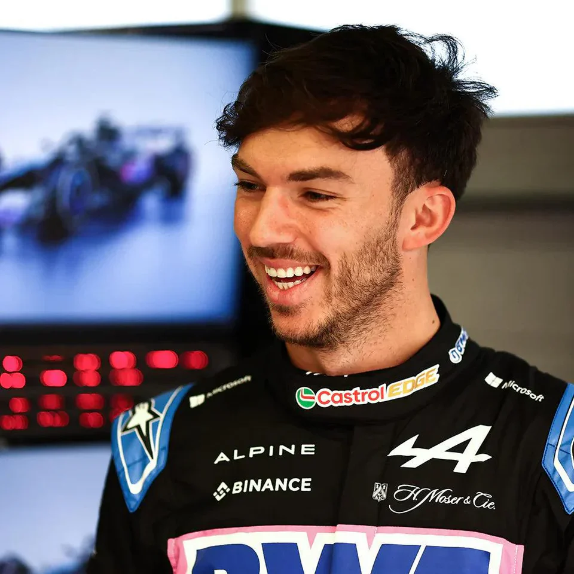
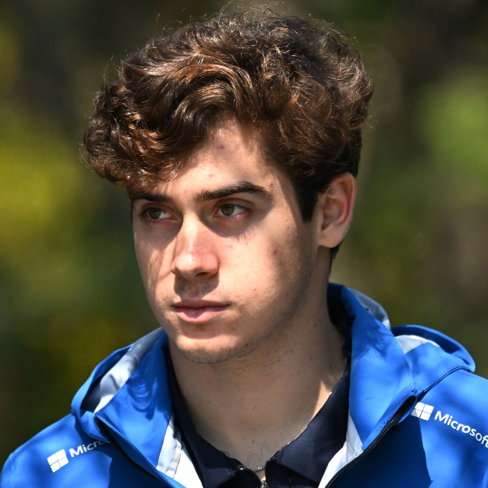

Alpine
BWT Alpine
Team Principle: Flavio Briatore
Drivers: Pierre Gasly, Franco Colapinto
Car: A525
Reserve Drivers: Jack Doohan, Paul Aron, Kush Maini
Academy Drivers: Nina Gademan, Kush Maini, Gabriele Mini, Nicola Lacorte
Pierre Gasly
Pierre Gasly was a RedBull junior and briefly raced for the main team however his one and only race win was in an AlphaTauri in 2020. He moved to Alpine in 2023 as a teamate to fellow Frenchman Esteban Ocon were in Brazil 2024 they scored a double podium.
Race Engineer: Josh Peckett
Franco Colapinto
Franco Colapinto was a rookie last year when he spent the second half as a Williams driver but since they signed Carlos Sainz for 2025 he became a reserve driver for Alpine. Recently he got promoted to replace Jack Doohan who only made it 6 races.
Race Engineer: Stuart Barlow